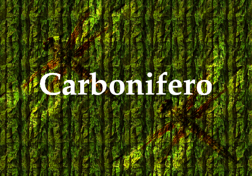
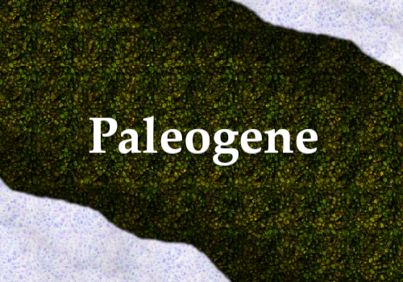
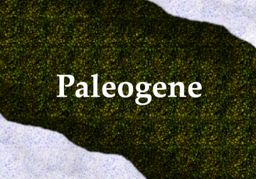
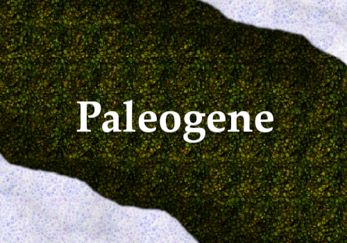

ERAS GEOLÓGICAS
Conheça a Fauna, Flora e Biodiversidade da antiguidade, o apogeu da vida nos oceanos durante o Crambiano, altas temperaturas globais do Permiano até o Jurrásico e a Era do Gelo do Plioceno.
Conheça sobre

 

